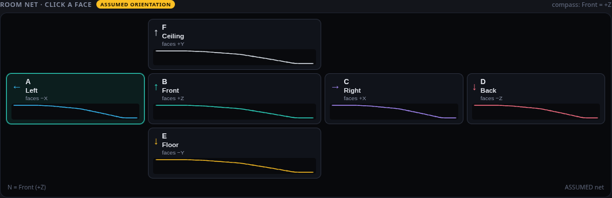
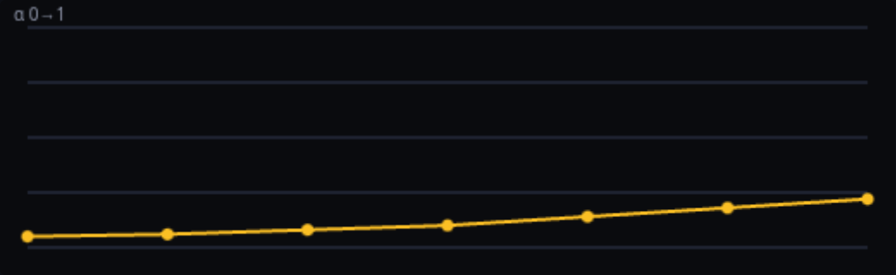
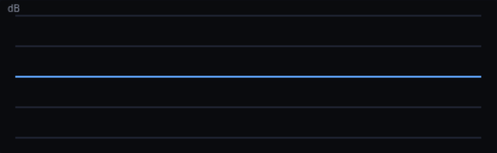

Surfaces unchanged top half
Pick a material for the selected face. Solo and Mute are on this tab only. The direct sound does not change.

Material PlasterGypsum boardBrickConcreteWood parquet…16
Face cards A–F with Solo / Mute (unchanged)
Surface A · Left selected face
Absorption vs frequency ASSUMED

Surface EQ low shelf · peak · high shelf

7 sliders: Low shelf dB/Hz, Peak dB/Hz/Q, High shelf dB/Hz
Absorb and EQ side by side (today stacked, 1046×322 each) so the analyser sits close under them.
Room colour · analyser of the wet sound was the Colour tab a measurement, not an EQ · 1/3 octave · updates after Render
● Now ● Last ● Hold A ● Hold B0 dB: Peak band ▾Hold AHold BClear
← A · Left · faces −X (follows the selected face)
(picture = today’s analyser before any Render in this session; it fills with the Now/Last/Hold curves after Render)
This face · absorb×EQ same strip as today, now right under the face controls
Workflow: Hold A → change the face EQ or material → Render → compare Now with Hold A.
Air unchanged
Air amount · Climate · ISO depth
▸ Advanced (Smear · Structure: Tail diffusion · seed · λ_ref)